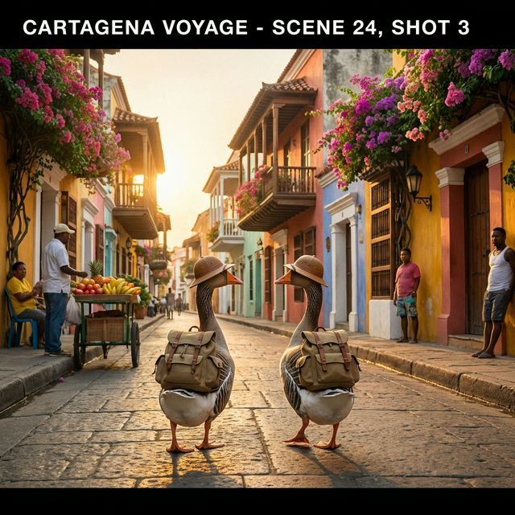
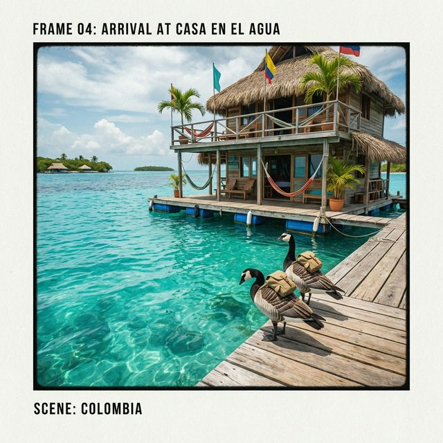
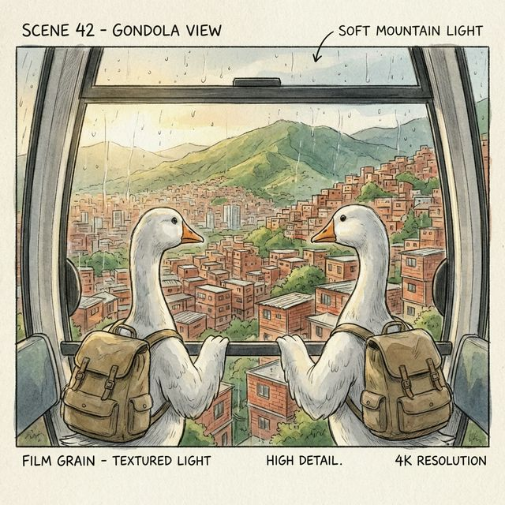
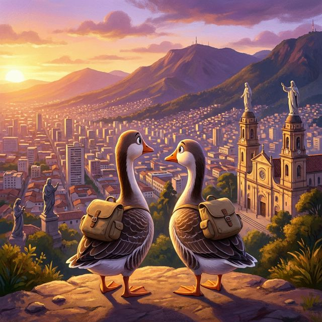
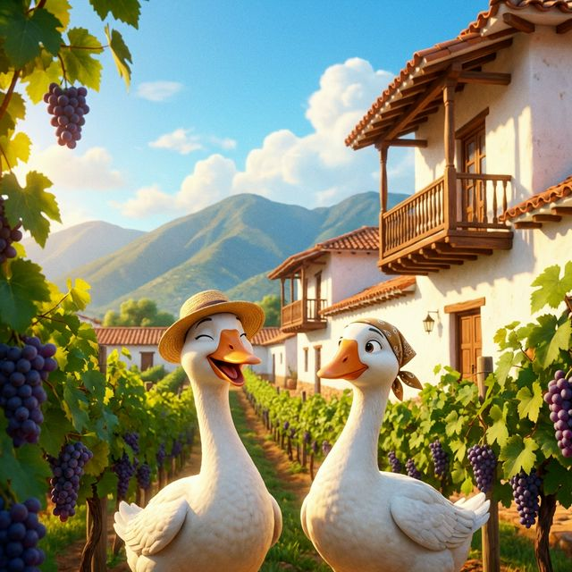
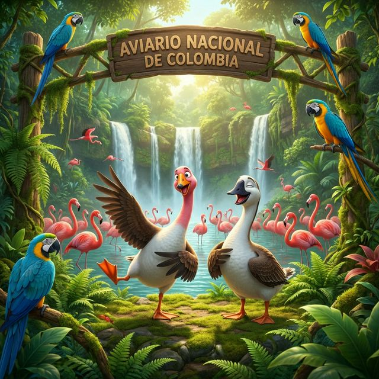

This storyboard chronicles the adventures of two traveling geese as they explore the vibrant landscapes and cities of Colombia.
The journey begins in the colorful, historic streets of Cartagena's Old City.

The geese head to the San Bernardo Archipelago to visit the famous floating hostel, "Casa en el Agua".

The travelers arrive in the City of Eternal Spring, taking in the panoramic views from the Metrocable.

High above the capital, the geese watch the sun set over the sprawling city of Bogotá from the Monserrate overlook.

The duo finds tranquility among the grapevines and white-washed colonial architecture of a winery in Villa de Leyva.

In the lush Aviario Nacional, the geese make new friends among bright pink flamingos and colorful parrots. One of them even tries to master the flamingo's one-legged stance!
